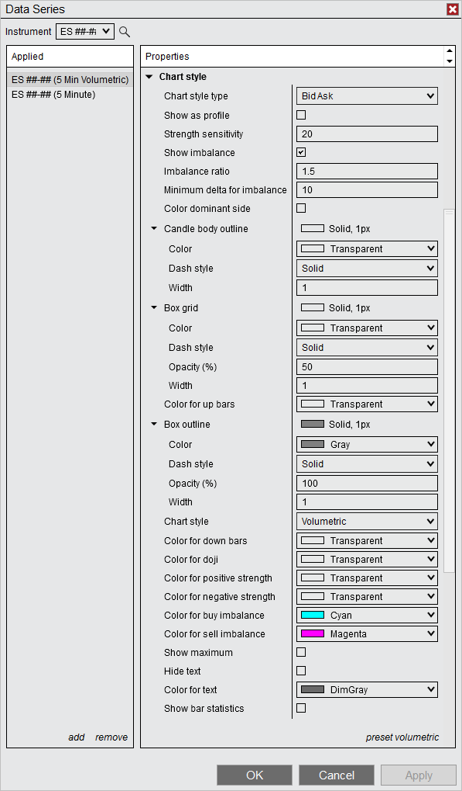

|
<< Click to Display Table of Contents >> Order Flow Volumetric Bars |


|
Order Flow Volumetric Bars
|
<< Click to Display Table of Contents >> Order Flow Volumetric Bars |
|
NinjaTrader Order Flow Volumetric bars provide a detailed ‘x-ray’ view into each price bar’s aggressive buying and selling activity. This technique primarily attempts to answer the question which side was the most aggressive at each price level. This is done by calculating the delta (greek for difference) between buying and selling volume (please see the Delta type property explanation below).
With the delta value known for each price level in the bar, it is then classified per each session for analysis and emphasizes the buying / selling strength unfolding. This is done by a gradient coloring approach shading the value cells in the bar, where the level of sensitivity for the gradient can be set via the Shading sensitivity property. The higher this value is set, the finer the gradient can be applied to various levels of strength - the NinjaTrader default is 20 levels.
This can be thought of as a way of not only saying who ‘won / lost’ the price level’s auction, but also by what margin or strength. This is not a signal in itself per se, but rather a mechanical means to classify the buying vs selling activity at each individual price level and thus offer the trader a more detailed look what happens inside the price bars.
A second comparison of buy sell volumes is the Imbalance detection. Here the price level buying and selling volumes are compared diagonally to understand which side of the market was stronger by exceeding the set Imbalance ratio. For example if the buying volume was 1000 contracts and the selling volume diagonal below was 300 then buying Imbalance was detected (assuming a default Imbalance ratio of 1.5). This can be helpful especially if multiple Imbalances 'cluster' close together to form support / resistance areas.
NinjaTrader Order Flow Volumetric bars can provide a large degree of details and facilitate displaying the information in a dynamically sized way, as the text is re-sized as your horizontally or vertically adjust the chart's scale range.
Critical: To perform the delta buy / sell aggressor classification (DeltaType BidAsk), historical bid / ask tick data access by your provider is needed. To see which data providers can offer which type of data in NinjaTrader, please review this table. If your provider could only support 'last' historical tick data, then the classification could still be made using DeltaType UpDownTick mode.
Forex spot data charting is traditionally driven from the bid side only, since no 'true' last exists. Provided values would not represent a centralized auction based market as with stocks or futures - as such Order Flow Volumetric Bars would not be supported on Forex spot data. |
 Order Flow Volumetric Overview
Order Flow Volumetric Overview
Order Flow Volumetric Overview:
You can apply the Order Flow Volumetric bars within a Chart Data Series window under Type.
Below we show a 5 minute Order Flow Volumetric BidAsk style chart of the popular E-Mini S&P 500 contract. An exemplary bar in yellow is annotated to show the different components you will work with on an Order Flow Volumetric chart.
1. Order Flow Volumetric bar 2. Sell Volume per each price level seen in the bar 3. Buy Volume per each price level seen in the bar 4. Open / Close bar 5. Maximum highlight in the bar - this shows the price(s) with the highest volume or delta in the bar 6. Bar Statistics panel (only 3 out of possible 10 values activated here)
On the next image, we see an excerpt of the same chart, however now the chart style type is changed to Delta. The bar highlighted yellow corresponds to the annotated bar above - this style, instead of the individual buy / sell volumes, show the combined delta value for each price level. If positive the level was seeing buying strength, negative if selling strength.
Now let's take a look how the actual values we see in the bar are calculated from the market data, as an example take the first level of our Volumetric BidAsk bar in the first screen-shot (numbers right below the 2/3 annotated numbers) :
We see a bid or selling volume of 220 and a ask or buying volume of 740.
Taking the difference (Buy volume - Sell volume) so 740 - 220 we get the delta value of 520 - which we see as first cell value in the 2nd screen-shot showing the Delta type.
The shading taking place in the bars will always be based on this delta value calculated, the chart style just defines what kind of textual data detail will be displayed (the actual Bid Ask Volumes or the Delta value).
Moving on to the lower portion Bar Statistics (6), we see the Buy Vol and Sell Vol for the bar and a delta as well exposed - however, please note that these are summed values for the entire bar.
If we sum all the buy volumes we would get 3463; summing sell volumes for the bar is 4535. All the price level deltas summed would equal the delta of the entire bar -1072.
Order Flow Volumetric Imbalance charting:
The screen-shot below explains the workings of the Imbalance detection in more detail. You can see the Buy / Sell volumes are compared diagonally here to arrive at the classification if buy or sell imbalance is present.
Let's run through the first calculation for the example bar in yellow:
1. Buy volume of 518 is compared to the diagonal below sell volume of 989 2. Dividing the buy volume into the sell volume we get a ratio of 989 / 518 = 1.9092... 3. NinjaTrader by default sets the ratio for Imbalance at 1.5, so this level gets marked with Sell Imbalance (magenta text color per default). 4. As a further condition, a minimum difference between the compared values must be present. This value is defaulted to 10 - which is valid in our example as well.
In the case that both Imbalance and Maximum would trigger for the same cell, the Maximum would override and be displayed (example shown below at annotation 1).
NinjaTrader 8 Release 19 also offers the option to compare horizontal for Imbalance (Imbalance mode setting).
Order Flow Volumetric Bar Statistics:The Volumetric Bar statistics show important values for each Volumetric bar in a static grid-like fashion. The same gradient strength shading as for the main Volumetric bars is applied here.
1.Via a right click in the price scale section the individual statistic values could be enabled / disabled 'on the fly'. Order Flow Volumetric Bar data shown as profile:Below chart is an example of showing the volumetric bid ask volume bar data as distribution profile, additionally 'hide text' is checked - which means we see the maximum (yellow) as well as imbalance (cyan / magenta) marked via the cell borders coloring.
Showing the data in this fashion can give traders an easier read, as differences between light and high volume price areas becomes visually more striking. |
 Order Flow Volumetric Imbalance Customization Example
Order Flow Volumetric Imbalance Customization Example
Order Flow Volumetric Imbalance Customization example:This section presents an example of how NinjaTrader Order Flow Volumetric bars can be highly customized to your trading style. Traders focused on Order Flow Volumetric Imbalances may consider working these charting ideas into their NinjaTrader setup.
The settings we present below could be used as a starting point -

The regular 5 Minute CandleStick chart is brought in to this chart via a second Data Series, so forming a MultiSeries chart with our main 5min Order Flow Volumetric bars. This can advantageous if you prefer to plot the regular bar / candlestick portion in the middle of the bar between the Buy/Sell volume columns. In NinjaTrader 8 Release 19 and higher, this can now be also accomplished without a second DataSeries by enabling the Center Open/Close bar plotting option. |
 Order Flow Volumetric Bars parameters
Order Flow Volumetric Bars parameters
Data series:
Chart style:
|
 Order Flow Volumetric Values NinjaScript access
Order Flow Volumetric Values NinjaScript access
For information on how to access the Order Flow Volumetric Bars and Bar Statistic values in NinjaScript, please see the Order Flow Volumetric Bars page in the NinjaScript section of the Help Guide. |